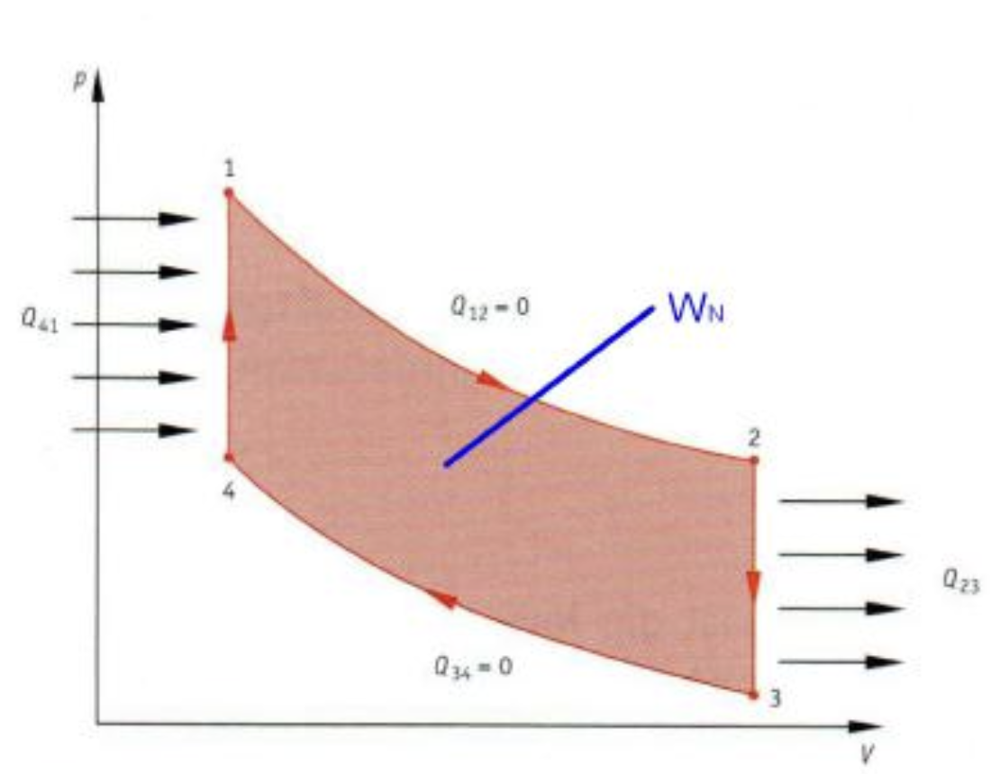

Kreisprozesse
Kreisprozesse
Eine geschlossene Kurve im \( p \)-\( V \)-Diagramm bezeichnet man als Kreisprozess. Je nachdem in welchem Drehsinn die Kurve durchlaufen wird, unterscheidet man rechts- und linksgängige Kreisprozesse. Da bei dem Kreisprozess stets wieder der Anfangszustand erreicht wird, haben auch alle Zustandsgröβen nach einem Durchlauf des Kreisprozesses wieder ihre Ausgangswerte.
Rechtsgänginger Kreisprozess
Soll der Kreisprozess Arbeit nach auβen abgeben, so genannte Nutzarbeit, so muss die Kompressionskurve unterhalb der Expansionskurve verlaufen. Um das zu erreichen, muss vor oder während der Kompression gekühlt und vor oder während der Expansion geheizt werden. Dabei ergibt sich ein rechtsgängiger Durchlauf der Prozesskurve. Da derartige Maschinen Wärme in Arbeit oder Kraft umwandeln, nennt man sie Wärmekraftmaschinen.
Daraus geht hervor, dass \( W_{12} \) die nach auβen abgegebene Expansionsarbeit ist, die betragsmäβig durch den Flächeninhalt unter der Expansionskurve repräsentiert wird. Das ist aber nicht die Nutzarbeit, die der Kreisprozess nach auβen abgibt, da von 3 nach 4 ein arbeitsaufnehmender Takt notwendig ist, dessen Betrag durch den Flächeninhalt unter der Kompressionskurve dargestellt wird. Man erkennt: Die Nutzarbeit kann durch Differenzbildung aus dem arbeitsliefernden Takt und dem arbeitsverzehrenden Takt bestimmt werden.Entsprechend findet man den Betrag der Nutzarbeit als Differenz der die Arbeitsbeträge darstellenden Flächeninhalte.
Nutzarbeit
Die Nutzarbeit \( W \) , die mit jedem Durchlauf des rechtsgängigen Kreisprozesses nach auβen abgegeben wird, entspricht betragsmäβig dem von der Kreisprozesskurve eingeschlossenen Flächeninhalt.
Energiebilanz
Für jeden Kreisprozess gilt:
$$ \sum Q+\sum W=0$$mit \( W_{23}=W_{41}=0 \) und \( Q_{12}=Q_{34}=0 \) folgt:
$$Q_{12}+Q_{34}+W_{23}+W_{41}=0$$mit \( W_{N}=W_{12}+W_{34} \)
$$ W_{N}=W_{12}+W_{34}=-Q_{23}-Q_{41}$$ $$ |W_{N}|=|W_{12}|-W_{34}=Q_{41}-|Q_{23}|$$Thermischer Wirkungsgrad
$$ \eta =\frac{Nutzen}{Aufwand} $$ $$ \eta =\frac{\left| W_{N}\right| }{Q_{zu}} =\frac{Q_{zu}-\left| Q_{ab}\right| }{Q_{zu}} =1-\frac{\left| Q_{ab}\right| }{Q_{zu}} $$Linksgängige Kreisprozesse
Verläuft bei einem Kreisprozess die Kompressionskurve oberhalb der
Expansionskurve, so wird dem Kreisprozess in der Bilanz Arbeit von
auβen zugeführt. Bei solchen Prozessen wird die Prozesskurve im
linksgängigen Drehsinn durchlaufen, weshalb man von linksgängigen
Kreisprozessen spricht. Diese Kreisprozesse werden als
Wärmepumpenprozesse bezeichnet.
Der Wärmepumpenprozess kann im Prinzip dadurch realisiert werden, dass
man die Laufrichtung einer Wärmekraftmaschine umkehrt und ihr
mechanische Arbeit zuführt. Diese aufgewandte Arbeit \( W_{auf}\), lässt
sich auch beim Wärmepumpenprozess als Flächeninhalt der vom
linksgängigen Kreisprozess eingeschlossenen Fläche wiederfinden.
Leistungszahl
Beim Wärmepumpenprozess, nur dieser wird im Folgenden betrachtet, ist die dem warmen Reservoir zugeführte Wärme der Nutzen. Damit ergibt sich die Leistungszahl zur Bewertung des Wärmepumpenprozesses wie folgt:
$$\varepsilon =\frac{Nutzen}{Aufwand} =\frac{\left| Q_{ab}\right| }{W_{auf}} =\frac{\left| Q_{ab}\right| }{\left| Q_{ab}\right| -Q_{zu}} =\frac{1}{\eta } $$
Die Leistungszahl des Wärmepumpenprozesses ist der Kehrwert des
Wirkungsgrades beim Wärmekraftprozess. Für die Leistungszahl gilt
offensichtlich stets: \( \varepsilon > 1 \).
Der Grenzfall \( \varepsilon = 1 \) hätte zur Folge, dass die Nutzwärme
ausschlieβlich aus der aufgewandten Arbeit gespeist wird. Ein
Wärmepumpen
fände nicht mehr statt.